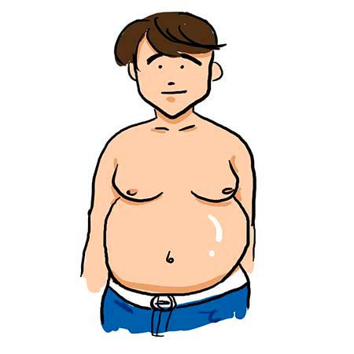
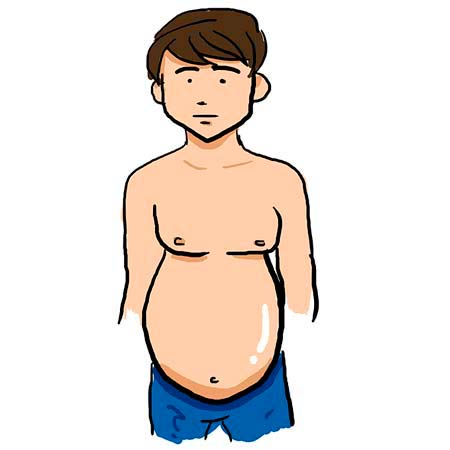
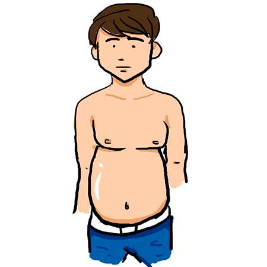
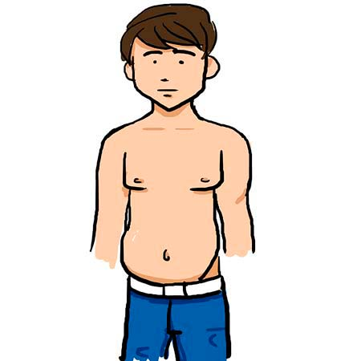
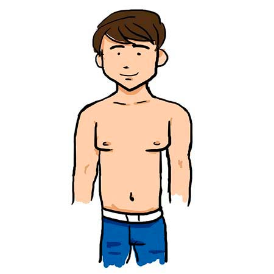
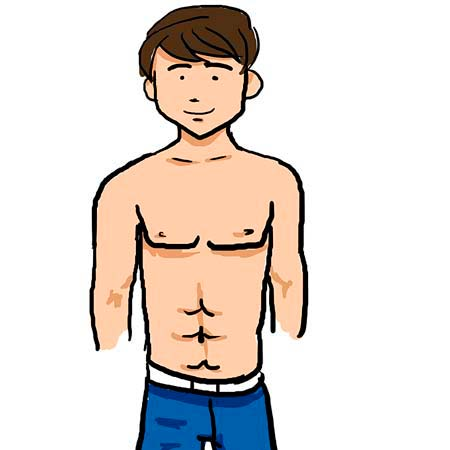
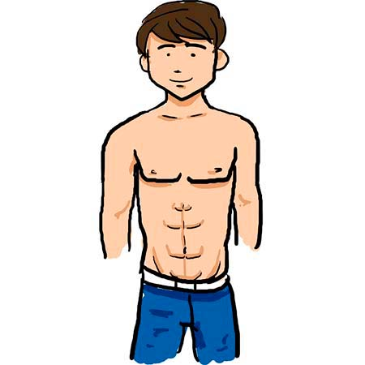

¡Barriga, barriguita, barrigota!
Estamos en la época en la que los hombres se demoran más en el baño arreglándose que las mujeres, y eso sin contar que no se tienen que maquillar, ni alisar el cabello; y a esto se le suma la importancia que ha tomado en el mundo de los machos alfa el estar fitness, marcaditos y saludables, pero esto no quiere decir que las barrigas estén perdiendo su poder y su gusto entre las mujeres. Vamos a describir todos los tipos de barrigas y usted se va a ubicar en alguna para ver si le atinamos.
Balón de Pilates
Esta barriga es la que se conoce en el bajo mundo como la barriga del poder. Esa que le sirve para apoyar el plato de comida y esa que ya no le deja ver la punta del… pie.
Huevito Kínder
No porque traiga sorpresa, sino porque esta barriga es un poco menos redonda y le sale desde la boca del estómago. ¡Cuidado! Puede estar sufriendo de gastritis. Lo bueno es que se puede ver un pedazo de pie. ¡Vamos mejorando!
4 meses de embarazo
Es de esas barrigas que están en carrera a ser el balón de pilates. Solo la tienen los jóvenes que tienen vida de universitario, viven con los papis y aún no tienen hijos. Está a tiempo de parar esa evolución de monstruo que viene en camino.
Buche de Chavito
Si en algún momento vio el Chavo del 8, tendrá la referencia de ese buchecito que tenía el Chavito cuando estaba con hambre. Es de esas barrigas que están llenas pero de “bichos”, lo peor es que parece como una tula estirada gracias a la gravedad. Le figuró purgarse.
La tabla
Vamos por buen camino. Si usted tiene esa barriga plana, o es un flaco y nada de lo que coma le cae mal, o porque mantiene una alimentación balanceada y es de esos que cuando sale a cenar le quita la piel al pollo y pide sólo 1 harina en el plato, pilas con eso, a las mujeres les encanta un hombre que coma más que ellas para que no las haga sentir mal.
Los cuadritos
Ese abdomen, porque ya no es barriga, refleja que hace algo de ejercicio y se cuida en la alimentación, sin descuidar lo más importante, la proteína. Esos cuadros que se forman como para lavar la ropa. Grrrr.
El camino a la felicidad
Es una marca que le deja el ejercicio extremo entre la cadera y la pelvis y conduce a la felicidad. Es ese camino que tienen algunos futbolistas como Cristiano Ronaldo y que disfrutan tanto las mujeres porque les encanta recorrer ese camino con besitos. Un premio a tanto sacrificio en el gimnasio.
Después de saber qué barriga o abdomen tiene y cuál le gustaría tener, solo tenga en cuenta que aunque para algunas mujeres los marcados sean muy sexys, para otras, las barrigas lo son aún más.
Así que la tarea es que usted se sienta cómodo con usted mismo y encuentre la que lo ame y lo acepte como usted es.
Al final, lo que empuja es la cola, aunque todo entra por los ojos.